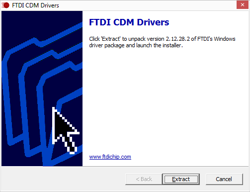
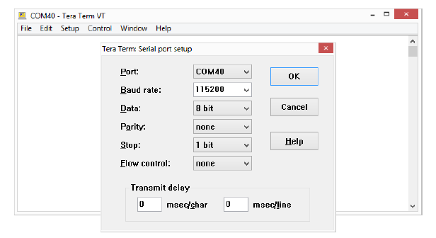

RFSoC-ZCU670 Evaluation Kit Tutorial |
Board Setup and Application Deployment |
Setting up the Board and Application Deployment¶
Introduction¶
This document shows how to set up the board and run the ZCU670 Ethernet TRD application with prebuilt images.
Prerequisites¶
Reference design package
zcu670_ethernet_trd_2022.2.zipfileZCU670 Evaluation Board with power cable - 2 No.
Micro-USB cable for the terminal emulation.
Micro SD card
UART Driver (FTDI CDM ).
Terminal emulator, for example:
Windows: teraterm (Refer to UG1036 regarding Tera Term installation)
Linux: picocom (https://github.com/npat-efault/picocom/releases)
25G SFP28 copper cable.
Iperf3 (v 3.9) application.
ptp4l (v 3.1.1)
Board Setup¶
The following figure shows the ZCU670 evaluation board set up.

Board jumper and switch settings
This is a one-time setup and the board should have been delivered to you with this default setting, however it is good to double check for the first time when you get the board.
Setup Boot Mode switch SW2 to (ON,OFF,OFF,OFF) from switch bits 1 to 4 as shown in the above image.
Connect SFP28 cable between the SFP28 port of Board-1 and SFP28 port of Board-2.
Flash the SD Card¶
Unzip the package and save it on your computer.
Navigate to the
../zcu670-ethernet-trd-2022.2/prebuiltfolder.Prepare the SD card. There are many options to format the SD Card in the windows tool. But, always format with FAT32 option. Use the SD Card Formatter tool to format the SD card SD Card Formatter
 .
.Copy
BOOT.BIN, image.ub and boot.scrto microSD card.Connect the microSD card to the Board.
Repeat steps 3 , 4 and 5 for the second Board.
GT Reference clocks¶
The GT Reference clocks required for the design are configured by the Renesas IDT drivers while booting. The 8A34001 chip is the clock source for IEEE 1588 and Synchronous Ethernet (SyncE) based clocks.
UART Driver Install¶
Prior to connecting and powering on the ZCU670, install the FTDI CDM Drivers FTDI CDM Driver

SD Boot Mode:¶
Connect the power supply to the ZCU670 (J52) port and Power on the board
Note: Ensure the Boot Mode switch SW2 to (ON,OFF,OFF,OFF).
Serial console settings
ZCU670 comes with a micro USB connector for JTAG+UART. Connect a Type-A to micro USB cable between the USB UART JTAG (FTDI) connector (J83) of the ZCU670 board and the PC.
The PC will enumerate and shows three COM ports.
UART0 (PS)
UART1 (PL)
System Controller UART
In a terminal emulator, connect to UART0 using the following settings:
Baud Rate: 115200
Data: 8 bit
Parity: None
Stop: 1 bit
Flow Control: None

After a successful boot, a shell prompt will appear as shown below.
zcu670-xilinx-2022.2 login:
Login with the username ‘petalinux’ and create a New password when prompted.
To configure the Ethernet interfaces, make sure to log in as super user using the New password created.
zcu670-xilinx-2022.2:~$:sudo su
Running the applications on board¶
Once the zcu670 boards are booted, set up an IP address for the interface (in this case eth1) and make sure the Ethernet link is established between boards. Do not proceed until you are able to ping between boards.
Note: If the link is not established, use the below commands once and ensure the link is up.
ifconfig <interface_name> down
ifconfig <interface_name> <IP-address> up
By default the interface links up at 25G.
Note: While making the interface up, make sure a valid IP address is set for the interface.
PTP commands¶
Phase Synchronization¶
Master:
Run ptp4l in master mode:
Board-1 > ptp4l -i <interface-name> -f /usr/bin/linkpartner_G.8275.1.cfg -m
ptp4l master side log :
ptp4l[422.355]: selected /dev/ptp1 as PTP clock
xilinx-zcu670-20222:/home/petalinux# ptp4l[422.392]: port 1: INITIALIZING to LISTENING on INIT_COMPLETE
ptp4l[422.392]: port 0: INITIALIZING to LISTENING on INIT_COMPLETE
ptp4l[422.817]: port 1: LISTENING to MASTER on ANNOUNCE_RECEIPT_TIMEOUT_EXPIRES
ptp4l[422.817]: selected local clock 9a11bc.fffe.62d209 as best master
ptp4l[422.817]: port 1: assuming the grand master role
Slave:
Run ts2phc between Renesas ClockMatrix PHC and Xilinx Timer-Syncer PHC in background:
Board-2 > ts2phc -m -c <interface-name> -s /dev/ptp0 -f /usr/bin/ts2phc.cfg &
ts2phc log :
PTP_PIN_SETFUNC2 failed: Invalid argument
ts2phc[521.912]: Failed to set the pin. Continuing bravely on...
Note: This message can be ignored because the Renesas ClockMatrix PHC driver does not support dynamic PTP_PIN_SETFUNC. For more details refer Renesas Phase Adjust quick start manual or Use -l option.
Run ptp4l in slave mode:
Note: Ensure that only one instance of ptp4l master is running in Link partner.
Board-2 > ptp4l -m -q -p /dev/ptp0 -s -f /usr/bin/standalone_G.8275.1.cfg
ptp4l phase synchronization log :
ptp4l[530.543]: selected /dev/ptp0 as PTP clock
ptp4l[530.546]: port 1: taking /dev/ptp0 from the command line, not the attached ptp1
xilinx-zcu670-20222:/home/petalinux# ptp4l[530.588]: port 1: INITIALIZING to LISTENING on INIT_COMPLETE
ptp4l[530.588]: port 0: INITIALIZING to LISTENING on INIT_COMPLETE
ptp4l[530.673]: port 1: new foreign master 9a11bc.fffe.62d209-1
ptp4l[530.923]: selected best master clock 9a11bc.fffe.62d209
ptp4l[530.923]: port 1: LISTENING to UNCALIBRATED on RS_SLAVE
ptp4l[531.303]: port 1: UNCALIBRATED to SLAVE on MASTER_CLOCK_SELECTED
ptp4l[531.990]: rms 937470829990502912 max 1676998802225530368 freq -1588 +/- 63277 delay -59892814365198016 +/- 215946613225567776
ptp4l[532.991]: rms 2629 max 3787 freq +5008 +/- 3793 delay 167 +/- 94
ptp4l[533.991]: rms 3208 max 3803 freq -2030 +/- 660 delay 52 +/- 19
ptp4l[534.991]: rms 1209 max 2025 freq -1957 +/- 389 delay 52 +/- 17
ptp4l[535.991]: rms 169 max 270 freq -687 +/- 290 delay 66 +/- 6
ptp4l[536.992]: rms 226 max 255 freq -112 +/- 63 delay 74 +/- 2
ptp4l[537.992]: rms 99 max 159 freq -78 +/- 23 delay 75 +/- 2
ptp4l[538.992]: rms 13 max 30 freq -166 +/- 22 delay 74 +/- 1
ptp4l[539.993]: rms 16 max 18 freq -211 +/- 6 delay 73 +/- 1
ptp4l[540.993]: rms 8 max 12 freq -217 +/- 1 delay 73 +/- 0
ptp4l[541.993]: rms 1 max 2 freq -13 +/- 51 delay 73 +/- 0
Frequency Synchronization¶
Note: Before running frequency syncronization kill all instance of ts2phc running background.
Run ptp4l in master mode:
Board -1 > ptp4l -i <interface-name> -m or vice versa
ptp4l master side log:
ptp4l[6195.490]: selected /dev/ptp1 as PTP clock
ptp4l[6195.491]: port 1: INITIALIZING to LISTENING on INIT_COMPLETE
ptp4l[6195.492]: port 0: INITIALIZING to LISTENING on INIT_COMPLETE
ptp4l[6203.369]: port 1: LISTENING to MASTER on ANNOUNCE_RECEIPT_TIMEOUT_EXPIRES
ptp4l[6203.370]: selected local clock 9a11bc.fffe.62d209 as best master
ptp4l[6203.370]: port 1: assuming the grand master role
Run ptp4l in slave mode:
Board -2 > ptp4l -i <interface_name> -m -s or vice versa
ptp4l frequency synchronization slave side log:
ptp4l[6276.202]: selected /dev/ptp1 as PTP clock
ptp4l[6276.203]: port 1: INITIALIZING to LISTENING on INIT_COMPLETE
ptp4l[6276.204]: port 0: INITIALIZING to LISTENING on INIT_COMPLETE
ptp4l[6277.829]: port 1: new foreign master 9a11bc.fffe.62d209-1
ptp4l[6281.829]: selected best master clock 9a11bc.fffe.62d209
ptp4l[6281.829]: port 1: LISTENING to UNCALIBRATED on RS_SLAVE
ptp4l[6284.829]: master offset -429840 s0 freq +0 path delay 101
ptp4l[6285.829]: master offset -430012 s1 freq -172 path delay 119
ptp4l[6286.829]: master offset 20 s2 freq -152 path delay 119
ptp4l[6286.829]: port 1: UNCALIBRATED to SLAVE on MASTER_CLOCK_SELECTED
ptp4l[6287.829]: master offset 36 s2 freq -130 path delay 101
ptp4l[6288.829]: master offset 37 s2 freq -118 path delay 77
ptp4l[6289.829]: master offset -3 s2 freq -147 path delay 82
ptp4l[6290.829]: master offset -4 s2 freq -149 path delay 77
ptp4l[6291.829]: master offset -8 s2 freq -154 path delay 77
ptp4l[6292.829]: master offset -5 s2 freq -154 path delay 76
ptp4l[6293.829]: master offset -4 s2 freq -154 path delay 75
ptp4l[6294.829]: master offset -3 s2 freq -154 path delay 74
ptp4l[6295.829]: master offset -1 s2 freq -153 path delay 73
Note: For more details refer Linux PTP Project source files and Documentation
Iperf Commands¶
Note: Make sure to apply taskset to appropriate CPU core while running iperf traffic as shown in below commands.
While running iperf traffic and ptp4l simultaneously, run either of the one in background.
TCP TX
Sender:
echo 2 > /proc/irq/<tx-irq-no>/smp_affinity taskset -c 2 iperf3 -c <Link partner IP> -T s1 -p 5301 -t 60 -i 60 -b 1850M & taskset -c 3 iperf3 -c <Link partner IP> -T s2 -p 5302 -t 60 -i 60 -b 1850M &
Receiver:
iperf3 -s -p 5301 & iperf3 -s -p 5302 & echo 2 > /proc/irq/<rx-irq-no>/smp_affinity echo 32768 > /proc/sys/net/core/rps_sock_flow_entries echo 2048 > /sys/class/net/eth1/queues/rx-0/rps_flow_cnt echo 2048 > /sys/class/net/eth1/queues/rx-1/rps_flow_cnt
UDP TX
Sender:
echo 2 > /proc/irq/<tx-irq-no>/smp_affinity taskset -c 0 iperf3 -u -c <Link partner IP> -T s1 -p 5301 -t 60 -i 60 -b 450M & taskset -c 1 iperf3 -u -c <Link partner IP> -T s2 -p 5302 -t 60 -i 60 -b 450M & taskset -c 2 iperf3 -u -c <Link partner IP> -T s3 -p 5303 -t 60 -i 60 -b 450M & taskset -c 3 iperf3 -u -c <Link partner IP> -T s4 -p 5304 -t 60 -i 60 -b 450M &
Receiver:
iperf3 -s -p 5301 & iperf3 -s -p 5302 & iperf3 -s -p 5303 & iperf3 -s -p 5304 & echo 2 > /proc/irq/<rx-irq-no>/smp_affinity echo 32768 > /proc/sys/net/core/rps_sock_flow_entries echo 2048 > /sys/class/net/eth1/queues/rx-0/rps_flow_cnt echo 2048 > /sys/class/net/eth1/queues/rx-1/rps_flow_cnt
TCP RX
Sender:
echo 2 > /proc/irq/<tx-irq-no>/smp_affinity taskset -c 2 iperf3 -c <Link partner IP> -P 2 -T s1 -p 5301 -t 60 -i 60 -b 500M & taskset -c 3 iperf3 -c <Link partner IP> -P 2 -T s2 -p 5302 -t 60 -i 60 -b 500M &
Receiver:
taskset -c 2 iperf3 -s -p 5301 & taskset -c 3 iperf3 -s -p 5302 & echo 2 > /proc/irq/<rx-irq-no>/smp_affinity echo 32768 > /proc/sys/net/core/rps_sock_flow_entries echo 2048 > /sys/class/net/eth1/queues/rx-0/rps_flow_cnt echo 2048 > /sys/class/net/eth1/queues/rx-1/rps_flow_cnt
UDP RX
Sender:
echo 2 > /proc/irq/<tx-irq-no>/smp_affinity taskset -c 2 iperf3 -c <Link partner IP> -u -P 2 -T s1 -p 5301 -t 60 -i 60 -b 2500M -l 1448 & taskset -c 3 iperf3 -c <Link partner IP> -u -P 2 -T s2 -p 5302 -t 60 -i 60 -b 2500M -l 1448 &
Receiver:
taskset -c 2 iperf3 -s -p 5301 & taskset -c 3 iperf3 -s -p 5302 & echo 2 > /proc/irq/<rx-irq-no>/smp_affinity echo 32768 > /proc/sys/net/core/rps_sock_flow_entries echo 2048 > /sys/class/net/eth1/queues/rx-0/rps_flow_cnt echo 2048 > /sys/class/net/eth1/queues/rx-1/rps_flow_cnt
License¶
Licensed under the Apache License, Version 2.0 (the “License”); you may not use this file except in compliance with the License.
You may obtain a copy of the License at http://www.apache.org/licenses/LICENSE-2.0
Unless required by applicable law or agreed to in writing, software distributed under the License is distributed on an “AS IS” BASIS, WITHOUT WARRANTIES OR CONDITIONS OF ANY KIND, either express or implied. See the License for the specific language governing permissions and limitations under the License.
Copyright© 2023 Xilinx